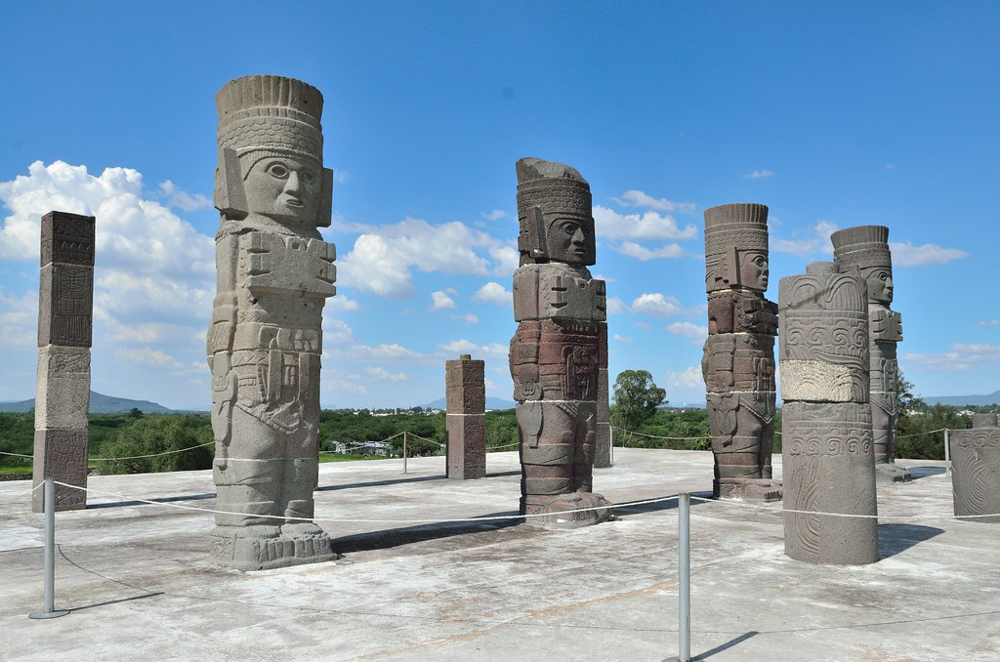

As an archeologist you have to search and dig for anceint artifacts that have been put there by ancient civilazations, then you must figure out what the artifact is and what it was used for.
1.Find or go to an excavation site
2.Start digging to find artifacts
3.After finding an artifact record your findings
4.Repeat somewhere else
It allows us in todays age to figure out how people used to live and it tells us a lot about history itself. Without archeology we wouldn't know much about acient civilazations because we wouldn't know what they used or what they did. So archeology is very important to understand the past.
